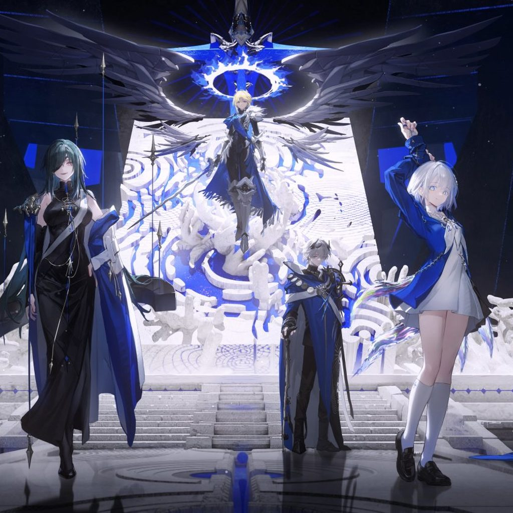

先放上一张图。
圆屏里是一张《明日方舟：终末地》的宣传图。裁成圆之后，就停在这块屏上。往下看的是换图，每一段一种。
正在把演示图放到圆屏上。
演示图来自《明日方舟：终末地》，© HYPERGRYPH / GRYPHLINE
圆屏里是一张《明日方舟：终末地》的宣传图。裁成圆之后，就停在这块屏上。往下看的是换图，每一段一种。
亮度先落到黑，图在黑里换掉，再亮起来。两张图不会叠在一起。暗下去大约 130 毫秒，亮回来大约 170 毫秒。
旧图往左走，新图从右边进来，中间是一条硬边。整段大约 300 毫秒。

新图从圆心扩开。边是硬的，里侧略亮，外侧略暗。大约 400 毫秒。

默认是顺时针。设备上大约 24 秒一圈，页面开头转得更快，方便看清，也可以暂停。放着时还可以关掉运动，或者只挪一两个像素。滚过这一段，画面会转过一个角度。
亮度先收到黑，图在黑里换掉，再亮起来。暗下去大约 130 毫秒，亮回来大约 170 毫秒。设备上的默认换法就是这一种。
旧图往左，新图从右边进来。大约 300 毫秒，接缝是硬的。
从圆心扩开。大约 400 毫秒。里侧略亮，外侧略暗，边不发虚。
也可以直接切过去。放着的时候可以关掉运动、每 7.5 秒挪一两个像素、顺时针转一圈约 24 秒，或者跟着设备的朝向。演示图来自《明日方舟：终末地》宣传图，© HYPERGRYPH / GRYPHLINE，不是这个项目的素材。
用 HTTPS 打开控制台，接上 USB，点击“连接徽章”。浏览器权限选择必须由你自己触发。不需要 Python 服务、PWA 或本机助手。
串口权限绑定 origin，而不是项目路径。同一 *.github.io 主机名下的其他仓库页面可能同源，并看见已经授权的端口。只在信任的站点授权。需要隔开时，用单独的子域。
设备用 ESP32-S3 ROM 里的 TJpgDec 解码 JPEG。WebP 由浏览器转成 JPEG，设备不直接解 WebP。一次实测里，42 张自然照片的解码路径大约 228–284 毫秒，包含读文件、CRC 和 RGB 转换，会随图片和存储而变化，不是性能承诺。浏览器编码质量参数是 0.85。
切换可以是直接、淡变、水平推入，或成本较低的径向涟漪。涟漪用比较硬的边缘，换更低的渲染开销。
USB 或 VBUS（包括充电器）供电，或者电源状态还不知道时，睡眠只关闭显示和 IMU，USB 控制保持在线，可以点触屏唤醒。电池供电时，手动 SLEEP、电池闲置超时，以及熄屏后拔掉 USB 改由电池供电，都会在当前操作完成、手指松开、电源芯片准备好之后，请求 AXP2101 软件关机。这不是 ESP32 深度睡眠，也不靠 GPIO3 的 EXT0 唤醒。
关机后按住 POWER 大约两秒冷启动。电池闲置超时默认关闭。重启会清掉内存里的播放历史。已经保存的设置还在。实际耗电还没有测过。